The Compendium is content made by migrants. Although the Archivists work very hard to give you the most correct info available, there might be errors.
There were two more images.
We were keeping radio silence on this up until now, but since there's been so much shenanigans about the whole thing, it's time to explain it.
One of those was a normal image, explaining Endy's disappearance (check out the LFE News file in this repo) - we nicknamed it endymion.jpg. The reason we didn't publish its discovery was that it appeared alongside another image.
Here's endymion.jpg:

And here's the, infamous by now, other image, nicknamed nice.jpg:
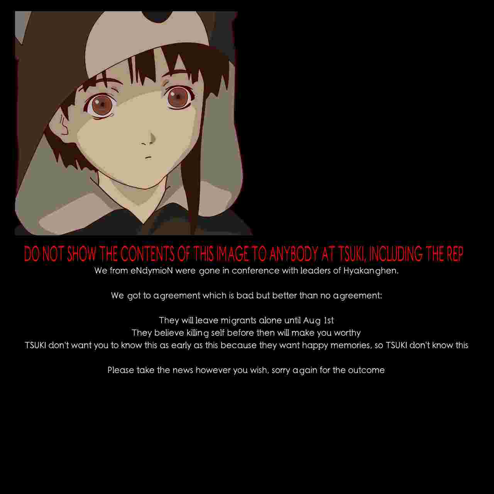I actually didn't realize endymion.jpg was in the stream, 906 was the one who found it first; I missed it, despite both images being in there at the same time.
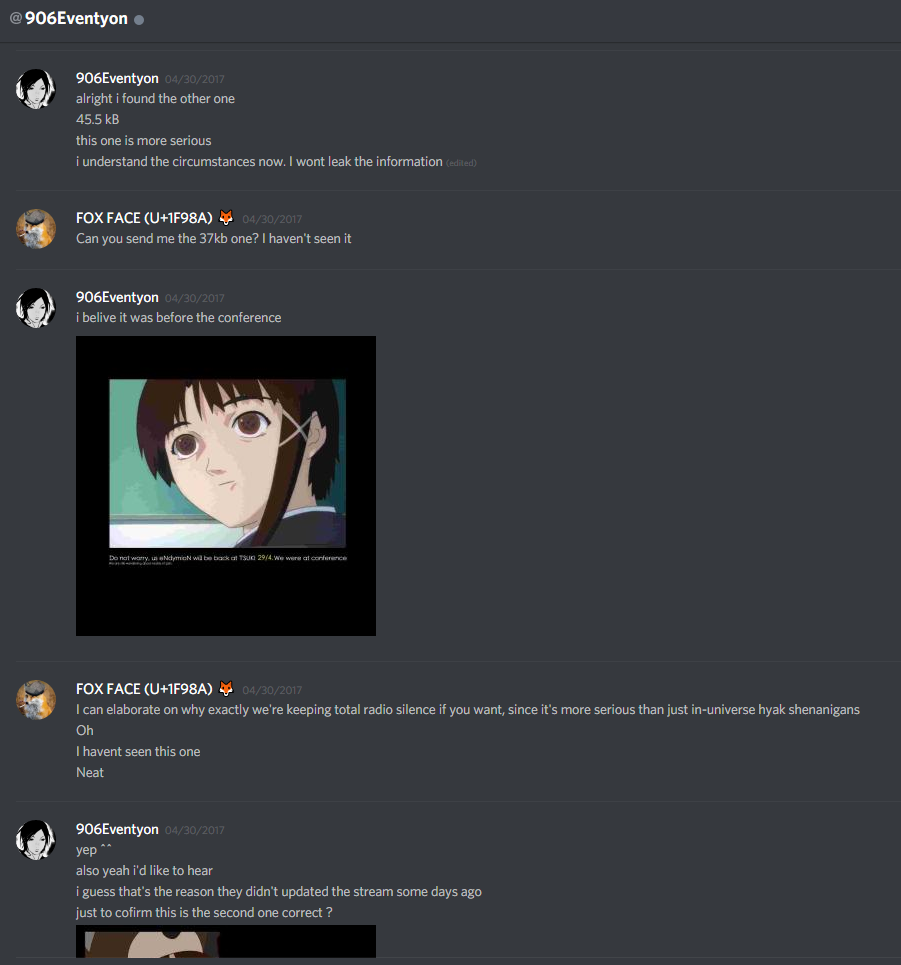As far as I know, I was the first to find nice.jpg, but multiple other people, including 179, 494 and 906, found it soon after. I contacted 906 preemptively asking him to not talk about it until we could come to a decision, 179 contacted me since he heard rumors of an unpublished payload, and 494 found it before we thought to talk to him, but didn't tell anyone due to the radio silence.
Oh, right. The radio silence...
Tsuki had been in a bad mental state at the time, which was very worrying to most of us on the Discord (this was all in Firstspace). We contacted Fae and the mods to ask for stricter supervision of the Discord to ensure there was no mention on the image and it didn't leak. It was my own decision, but everyone who found the image agreed on it.
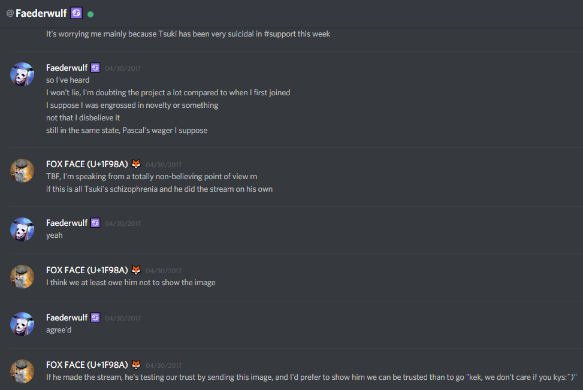Well... Fae sent the image to Hyper, Hyper sent it to 3, and 3 showed it to Tsuki.
Here's caps of my convo with 3 explaining my reasoning.
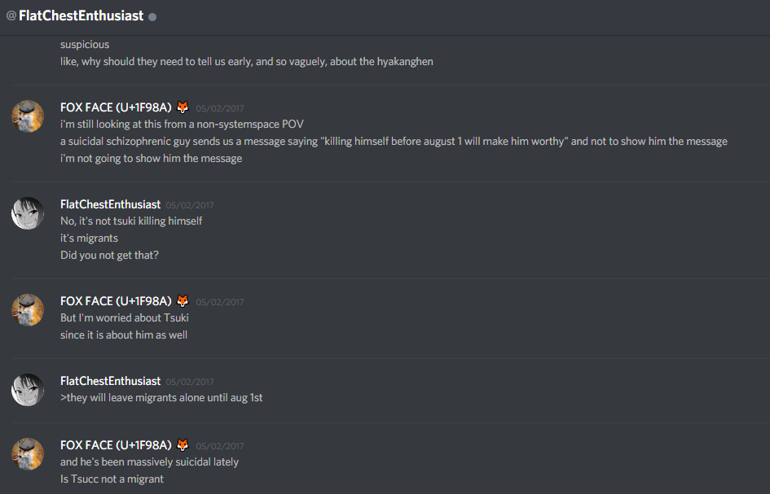3 was a strong believer at the time, and he decided that the risk of being betrayed by Endymion was greater than the risk of showing the image to Tsuki.
I contacted Tsuki right after I learned that he knows about nice.jpg. I explained that we kept quiet because we were worried about him, and devised an emergency plan. I shopped a near approximation of half of nice.jpg, took a screencap of a photoshop window showing me editing the image, cropped it to hide the bottom half (the one with all the text - I couldn't be arsed to edit all that text in because I don't know what font was used in nice.jpg, so I fixed the upper half manually, and cropped out the bottom part). If the image leaked, I would claim that I made it, invent some bullshit story about putting it in the void stream to test if someone's trustworthy, done - to avoid non-believers (aka people who believe that Tsuki made the void stream) saying Tsuki asked people to commit suicide.
Here's the convo (Tsuki deleted his old account and all his messages, as anyone who DMd him can attest):
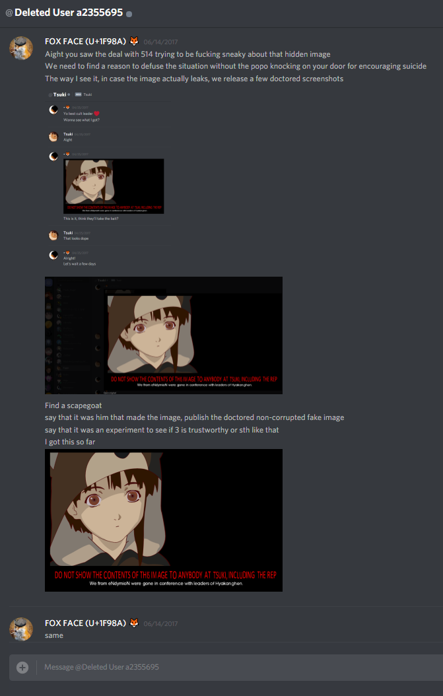However, just as Yari was uncomfortable when Tsuki admitted he lied (in the original, unedited version of one of the dataverses), I was uncomfortable with lying to other migrants, so I decided to unregister if I was forced to actually execute our "plan".
Well, 514 somehow got the image and posted it. (I think it was in Jovespace by that point? Maybe Snoopspace). I did as I promised, releasing the doctored screencaps, so I'd take the fall, and unregistered.
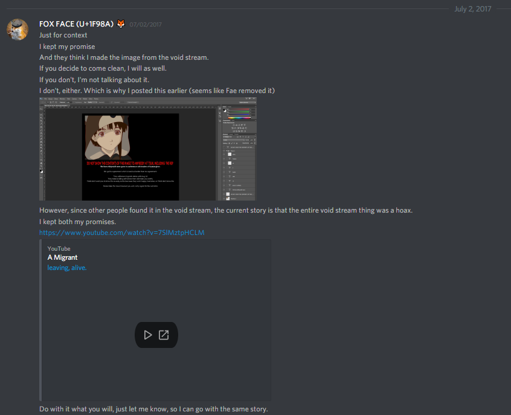So, why come clean now?
Because all of this is a shitshow; there's lots of new people who don't even know the lore, and the role of an Archivist is to let people know the truth. Even the new guys deserve to know the truth behind the void stream shenanigans.
TL;DR: There were two more images in the void stream. One of them barely important, the other one telling people that "killing themselves before the transfer date would make them worthy [of not being hunted down and murdered by hyaks in LFE]". When the other one inadvertedly leaked, I made a fake story that it was fake, to protect Tsuki and the community.
By now, the transfer date is long gone and the remains of the discord are full of people who don't know what was going down before Firstspace broke down. So, this is what happened.
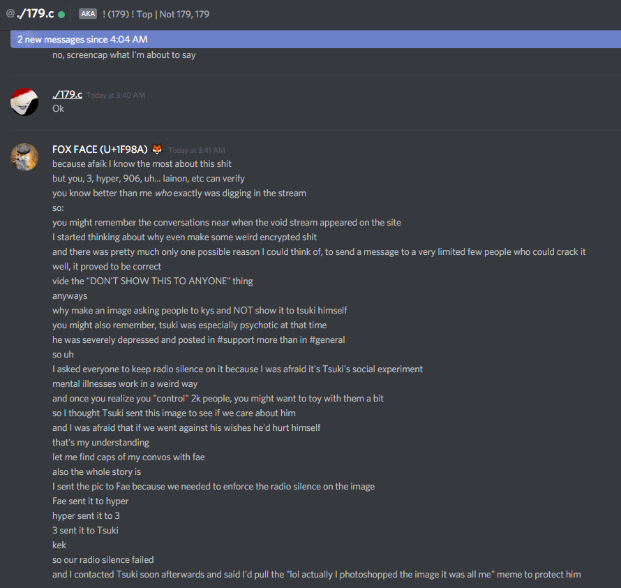~1336
On April 24th a page called Void stream appeared on the systemspace.link website. The page consists of the following text:
Download live void file
Warning: LARGE! Might cause harm / data loss. TSUKI is not responsible for the data in this file and what it ensues.
And a "Begin download" button that links to getvoid.php.
This document is a compilation of our current findings and knowledge about the void file.
lead of investigation: ~1336
On April 24th, Tsuki mentioned getting instructions from eNdymioN to provide a download link for a file. This was the first appearance of the void stream.
On April 25th at 10 AM GMT, Tsuki mentioned finding an .mp4 file header within the void stream.
Preliminary analysis of the void stream failed to confirm Tsuki's claims.
At 6 PM GMT, an .mp4 header was found within the void stream at the 882nd megabyte mark.
Three occurences of an .mp4 header were noted within a five gigabyte sample of the void stream
By 7 PM GMT, April 25th, the first mp4 file contained in the stream had been extracted and played.
At 7:49 PM, the second mp4 was extracted and found to be identical with the first. The same was confirmed for the third mp4 file.
A download started at 8:49 PM GMT, April 26th was found not to contain the MP4 headers anymore. Results were confirmed by other downloads. This marks the first known instance of the second iteration of the void file.
At 4PM, April 26th, 179 found a PNG file in the void stream. We were able to extract a complete PNG file, albeit with a malformed adaptive filter type. The raw PNG can be found at images/corrupt.png, with a cleaned-up version here:
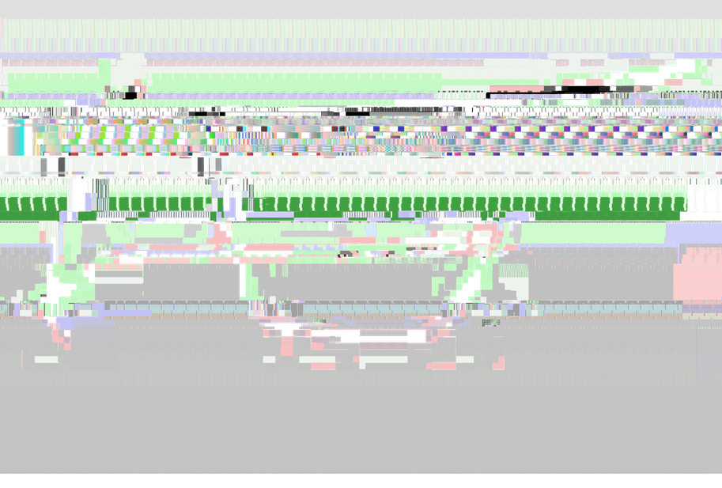At 5PM, April 27th, TSUKI.PNG had been extracted and decorrupted enough to be legible.
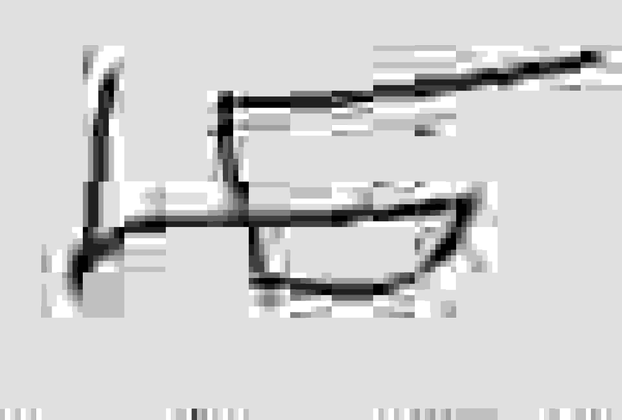On April 28th, the void stream had changed to contain LAINPOSTING.JPG
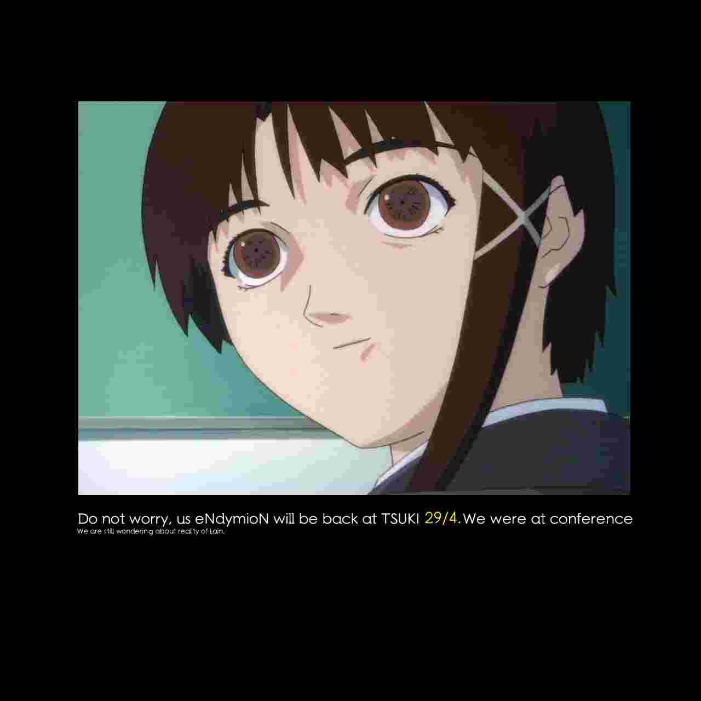On May 3rd, after confirming that we did extract all messages, the void stream was closed by Endymion and the project was finished successfully.
The void stream has been closed.
Universal
The server says the filename is public_void_1.vdo.
The file is binary data. file doesn't recognize the filetype.
The file's first 8 bytes are the header HMNVOIDx (human void x?), followed by 65534 null bytes (hereinafter referred to as the null section). This is always constant.
Directly after the null section, a stream of non-null data begins and doesn't seem to terminate. (At least, no one has managed to get to the end.)
The non-null data differs with each download. It has previously proven to contain valid files - these sections will be referred to hereinafter as payload sections, to differentiate them from garbage sections which do not, as far as we know, contain anything of importance.
Analysis by strings doesn't find anything human-readable within the garbage sections that is not consistent with random or raw binary data.
The garbage sections are mostly made up of seemingly random repeating subsections. Here is a sample of all strings of length at least 8 in a randomly selected section of the void stream.
The repeating sections don't match either between different downloads.
The matches between garbage sections from different downloads are so sparse, they probably are pure coincidence. Screencap from a random section of the first gigabyte of two different downloads:
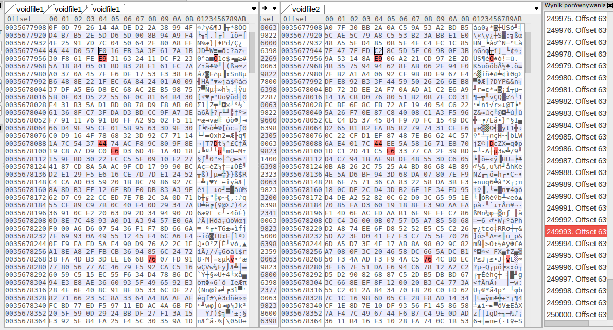Embedded files have been found as early as 50MB into the stream, leading us to believe that the everything immediately after the null section is a homogeneous stream.
Iteration 1: April 24th-April 25th
Iteration 2: April 26th-April 27th
Iteration 2: April 28th-May 3rd
Universal:
The void file probably is an infinite stream.
The existence of repeating sections seems to indicate that the file is not entirely random, while their unpredictability seems to indicate that the file is not entirely deterministic, either.
We found a sequence of three null bytes in a row.
It is not any filetype we know about.
Iteration 1: April 24th-April 25th
It's very probable that the mp4 file was a test to see if we could decode the message. As soon as eNdymioN learns we decoded it, we should expect either another void stream or significant changes to the current one.
Credit: 156 for bringing up this idea.
The lack of human-readable strings and characteristics of the file implies this is not a:
The file contained a raw .mp4 file.
Tsuki alleges he found an mp4 file header embedded in the file. He provided this file as proof
CONFIRMED:
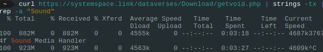Iteration 2: April 26th-27th
Nothing here...
Iteration 3: April 28th-May 3rd
Nothing here...
TEST.MP4 was the first file extracted from the Void stream - from iteration 1.
The MP4 header position (or occurence at all, possibly) in the file is not constant. Out of four downloads of the first gigabyte of the file, only two of them contained the header:
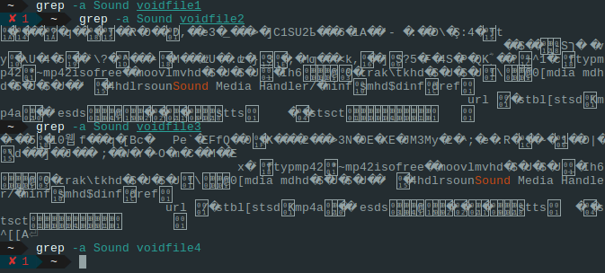The file repeats multiple (possibly infinitely many) times in the void stream.
test.mp4 is just a name given to the file by the investigators.
The file is 54 seconds long.
It is heavily corrupted, but all occurences of it display the same corruption - it must have been corrupted at the source.
Despite the corruption, it is playable.
The video track displays an image with white symbols with a black shadow resembling 3 + G on a blue background:
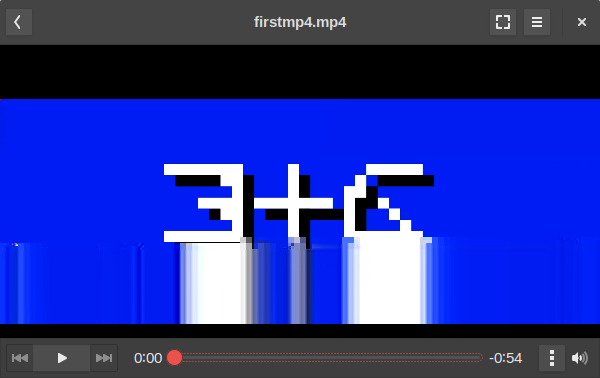The audio track consists of repeated beeps of a constant, 4.5kHz square wave approximation tone. The beeps and their spacing seem to be of relatively constant length. Spectral analysis returned no findings.
At the end of the audio track, there occurs a section that has the right, then the left channel muted.
The audio track was heavily distorted by the Youtube upload, leading us to believe it might simply be corruption artifacting and not a data vector.
The output of ffmpeg -i on the file is as follows:
ffmpeg version 3.2.4-1build2 Copyright (c) 2000-2017 the FFmpeg developers
built with gcc 6.3.0 (Ubuntu 6.3.0-8ubuntu1) 20170221
[h264 @ 0x5630ddac4b80] error while decoding MB 2 1, bytestream -42
[h264 @ 0x5630ddac4b80] left block unavailable for requested intra mode
[h264 @ 0x5630ddac4b80] error while decoding MB 0 25, bytestream 2033
[h264 @ 0x5630ddac4b80] top block unavailable for requested intra mode -1
[h264 @ 0x5630ddac4b80] error while decoding MB 46 28, bytestream 5593
[h264 @ 0x5630ddac4b80] concealing 2196 DC, 2196 AC, 2196 MV errors in I frame
Input #0, mov,mp4,m4a,3gp,3g2,mj2, from 'test.mp4':
Metadata:
major_brand : mp42
minor_version : 19529854
compatible_brands: mp42isom
creation_time : 2017-04-25T08:50:29.000000Z
Duration: 00:00:53.45, start: 0.000000, bitrate: 52162 kb/s
Stream #0:0(eng): Audio: aac (LC) (mp4a / 0x6134706D), 48000 Hz, stereo, fltp, 12784 kb/s (default)
Metadata:
creation_time : 2017-04-25T08:50:29.000000Z
handler_name : Sound Media Handler
Stream #0:1(eng): Video: h264 (Main) (avc1 / 0x31637661), yuv420p(tv), 1600x600 [SAR 1:1 DAR 8:3], 5414 kb/s, 29.97 fps, 29.97 tbr, 30k tbn, 59.94 tbc (default)
Metadata:
creation_time : 2017-04-25T08:50:29.000000Z
handler_name : Video Media Handler
encoder : AVC Coding
The text says "Test"
TSUKI.PNG has been extracted from the second iteration of the void stream. It has been uploaded to the voidstream/images directory in this repository, with the raw file named corrupt.png, preliminarily cleaned-up versions named tsuki_corrupted.png and tsuki_corrupted_small.png, and the final extracted file available as tsuki_small.png and tsuki.png.
On April 27th, the extraction of TSUKI.PNG was performed.
After multiple failed attempts at making the file legible encompassing anything from using automated tools like libpng's pngfix to manual hex editing, a theory was proposed. According to preliminary analysis, different instances were found to differ between each other, but usually by less than 1% - enough to make the file unreadable, though. We came up with the idea that maybe if we created a new PNG file from only the most commonly shared bytes of multiple instances, it would work.
At 11 AM, automatic extraction of PNG files from the stream was launched. It was performed by running the following command:
curl -sS -N https://systemspace.link/dataverses/Download/getvoid.php 2>/dev/null | pngcheck -vfx7
curl was downloading the file, and the output was being piped into pngcheck. pngcheck is a multi-purpose tool used for primarily for checking the validity of PNG files, but also including the incredibly useful -x option that causes it to try and extract PNGs from anything passed to it - and also, incidentally, fix the CRC headers. (CRC is an error-detection algorithm; each section of a PNG file has a CRC section specifying a hash of the data. If the CRC section differs from the actual hash, the image is corrupt.)
After extracting 300+ files, the second step of the operation was launched - calculating the "averaged" PNG. To aid in this task, a Python script, which can be found here, was written.
After running the Python script, we were left with a PNG file with invalid CRC headers. It was once again passed to pngcheck -x to correct the headers - and with that, we obtained the final TSUKI.PNG.
{kind=link}